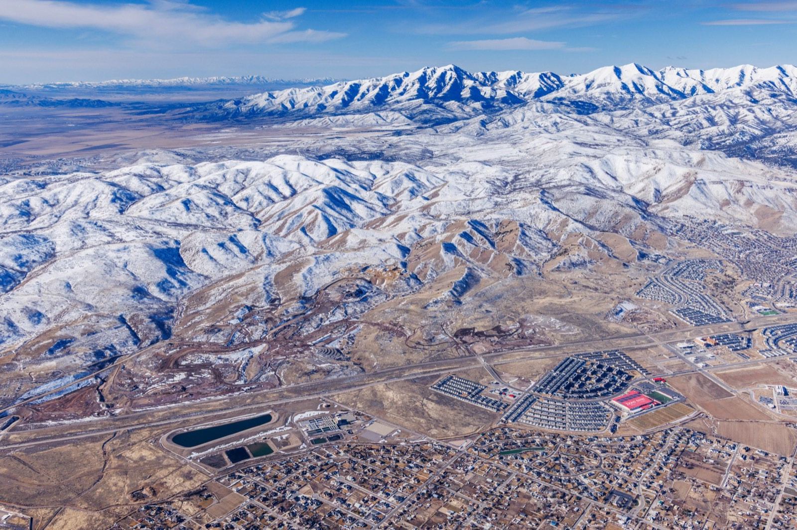
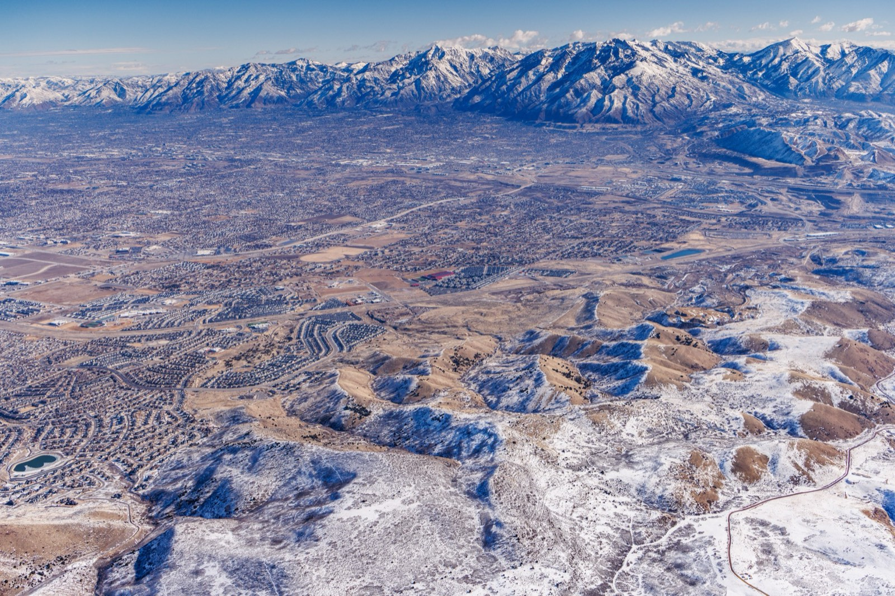

Around Herriman
Herriman is close to everyday errands, parks, schools, and the mountains.
Everyday errands, schools, parks, and the mountains, a short drive from home.
A few restaurants at Mountain View Village, and The District a little farther out.
About 5 minutes
South Jordan — about 10 minutes
An open-air center with shopping, dining, and movies.
The mountains, golf, and a city recreation center are all a drive from Herriman. Canyon traffic adds time.
Wasatch resorts are a canyon drive from Herriman. Snowbird is the closer of the three below. Brighton and Park City take longer, and the canyons get slower when they are busy.
Snowbird: about 45 min | Brighton: about an hour | Park City: about an hour
Thanksgiving Point and Glenmoor are about 15 minutes. South Mountain is about 20.
Around Herriman. Panorama does not have its own courts.
Fitness centers around Herriman
About 5 minutes. Pool, fitness, and gym.
Yoga and fitness studios in the area
Public courts around Herriman, not at Panorama
Groceries and hardware are a few minutes away. Larger centers are a short drive out. Times are a quiet drive, before traffic.
About 5 minutes
About 5 minutes
South Jordan — about 10 minutes
Shopping, dining, and movies.
West Jordan — about 15 minutes
A larger retail center.
These schools are in Herriman. Jordan School District sets the boundaries, so confirm the current map before you rely on one.
Grades K–6 · about 4 miles
Grades 7–9 · about 3 miles
Grades 9–12 · about 5 miles
UVU, BYU, and the University of Utah are within about 45 minutes.
A foothills city with the valley close by.

Herriman sits at the base of the Oquirrh Mountains. Butterfield Canyon opens on the west side of town, and Rose Canyon is in the mountains above it. Downtown Salt Lake City is about 25 minutes, and Silicon Slopes is about 15. Wasatch ski resorts are about an hour, longer when the canyons are busy.
About 10 minutes. The path around Oquirrh Lake is public.
About 10 minutes to The District.
A few minutes to Mountain View Village.
A neighboring city.
These are around Herriman. Panorama's own trail system is still ahead and is listed with the amenities.
Opens on the west side of Herriman, into the Oquirrh Mountains.
A canyon in the Oquirrh Mountains above Herriman.
About 5 minutes
Salt Lake County's recreation center in Herriman, with a pool, fitness rooms, and a gym.
Daybreak — about 10 minutes
The path around the lake is open to the public. Boating is for Daybreak residents and their guests. Swimming is not allowed.
Runs along the corridor beside Herriman.
Visit us and discover why Panorama is the perfect basecamp for the Utah lifestyle.
Find Your Home